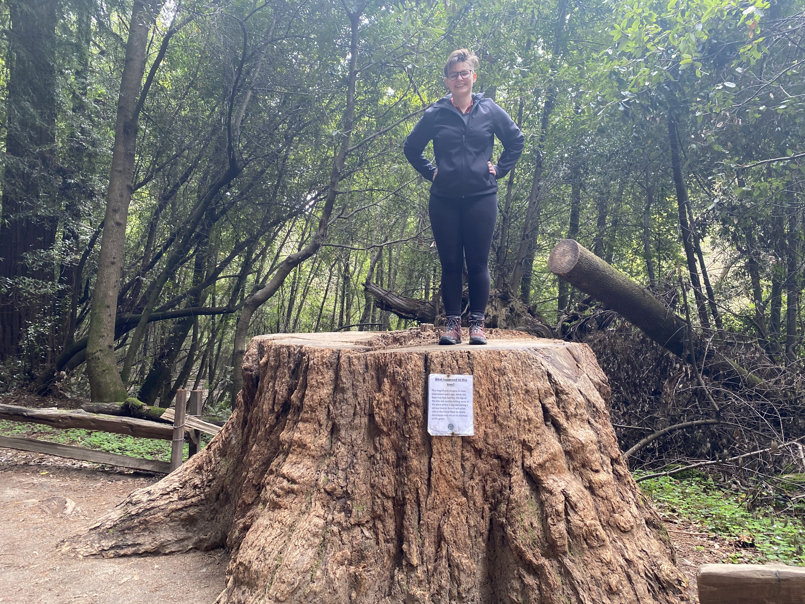

About Kay
As a former copyeditor, I had a great eye for detail but felt the call for a greater challenge. Now that I'm learning coding from Thinkful, I'm basking in the fun puzzles I get to solve and people I get to meet!
Non-coding activities I enjoy:
- taking walks
- chilling with my cat
- cross-stitching